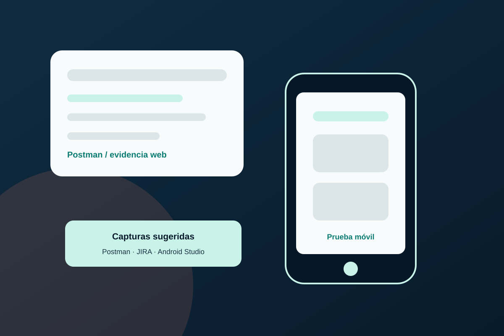

Proyecto 01QA Manual · Functional Testing · Regression Testing
Urban Routes — Pruebas funcionales y de regresión
- Problema
- Validar que los flujos principales de Urban Routes funcionaran según los requisitos: direcciones, tarifas, licencia de conducir, método de pago, opciones del pedido y mensajes de la interfaz.
- Qué hice
- Convertí requisitos funcionales en casos de prueba y ejecuté pruebas manuales, UI Testing y regresión. Registré resultados en checklists y documenté bugs en Jira con entorno, severidad, pasos y evidencia.
- Resultado o aprendizaje
- Fortalecí mi capacidad para validar flujos de usuario, detectar inconsistencias funcionales y visuales, y comunicar errores de forma clara, reproducible y útil para desarrollo.
Documentación disponible bajo solicitud